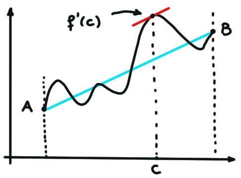
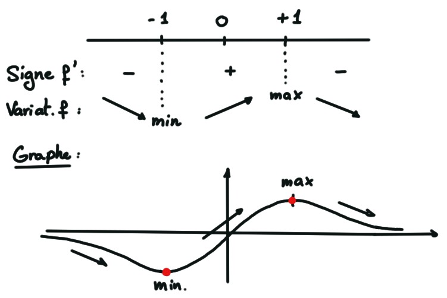
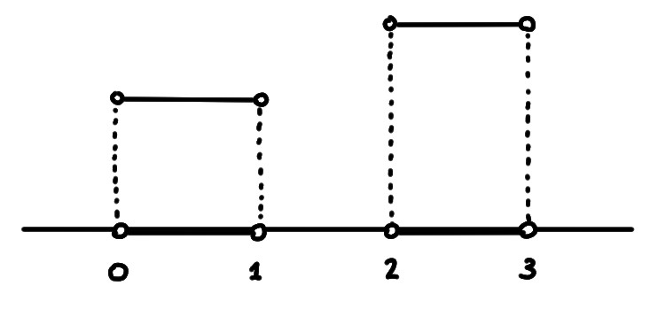
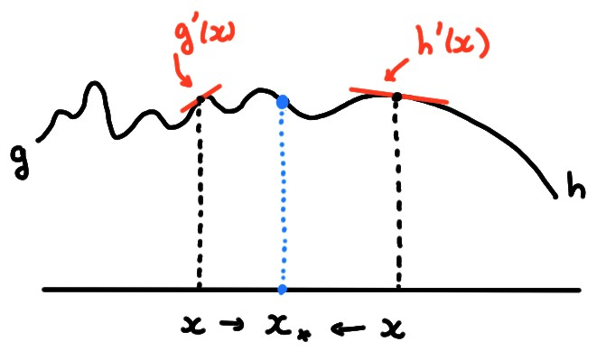

(Théorème des Accroissements Finis (abbrégé TAF par la suite))
Soit \(f\) continue sur \([a,b]\), dérivable sur \(]a,b[\).
Alors il existe \(c\in ]a,b[\) tel que
\[f'(c)=\frac{f(b)-f(a)}{b-a}\,.\]
Définissons
\[
g(x):= f(x)-f(a)-\frac{f(b)-f(a)}{b-a}(x-a)\,.
\]
Cette fonction
est continue sur \([a,b]\), dérivable sur \(]a,b[\),
et \(g(a)=g(b)=0\). Par le Théorème de Rolle, il
existe \(c\in ]a,b[\) tel que \(g'(c)=0\). Or
\(g'(x)=f'(x)-\frac{f(b)-f(a)}{b-a}\), donc \(g'(c)=0\) implique
\(f'(c)-\frac{f(b)-f(a)}{b-a}=0\).
Remarquons que
le quotient
\[\frac{f(b)-f(a)}{b-a}\] représente la pente du segment qui relie
le point \(A=(a,f(a))\) au point \(B=(b,f(b))\).
Donc ici aussi, le résultat est géométriquement
intuitif: si le graphe d'une
fonction lisse part d'un point \(A\) et arrive à un point \(B\), il doit exister
au moins un point
de son graphe où la droite tangente est parallèle au segment \(AB\):

Les conséquences du TAF finis sont nombreuses.
Conséquence 1: Variation de \(f\) et signe de \(f'\)
Supposons que \(f'(x)\geqslant 0\) pour tout \(x\in [a,b]\).
Soient \(x,x'\in [a,b]\), \(x\lt x'\). On peut appliquer le TAF sur \([x,x']\):
il existe \(c\in ]x,x'[\) tel que
\[ \frac{f(x')-f(x)}{x'-x}=f'(c)\geqslant 0\,.
\]
Comme \(x'-x>0\), ceci implique \(f(x')\geqslant f(x)\). On a donc montré que \(f\)
est croissante sur \([a,b]\).
Supposons maintenant que \(f\) est croissante sur \([a,b]\). Considérons un
point \(x\in ]a,b[\) quelconque, et calculons la dérivée de \(f\) en \(x\):
\[\begin{aligned}
f'(x)
&=\lim_{z\to x}\frac{f(z)-f(x)}{z-x}\\
&=\lim_{z\to x^+}\frac{f(z)-f(x)}{z-x}\,.
\end{aligned}\]
Dans ce dernier quotient, \(z-x>0\), et donc \(f(z)-f(x)\geqslant 0\), ce qui
entraîne que le quotient est positif. Donc sa limite est aussi positive:
\(f'(x)\geqslant 0\).
Considérons \(f(x)=\frac{x}{1+x^2}\), définie et dérivable
sur tout \(\mathbb{R}\). Par la proposition ci-dessus, on
peut étudier la variation de \(f\), c'est-à-dire trouver les intervalles
sur lesquels \(f\) croît et décroît, simplement en étudiant le signe de sa
dérivée. Comme
\[
f'(x)=\frac{1-x^2}{(1+x^2)^2}\,.
\]
Le signe de cette dernière donne:

Le TAF peut aussi s'utiliser pour démontrer des inégalités ''universelles''
entre fonctions,
Montrons que
\[ \boxed{e^x\geqslant 1+x\qquad \forall x\in \mathbb{R}\,.}
\]
Posons \(f(x):= e^x-(1+x)\). On a \(f(0)=0\). Comme
\[ f'(x)=e^x-1\,,
\]
\(x\lt 0\): Comme \(f'(x)\leqslant 0\) \([x,0]\) la proposition donne \(f(x)\geqslant f(0)\).
\(x\gt 0\): Comme \(f'(x)\geqslant 0\) \([x,0]\) la proposition donne \(f(x)\geqslant f(0)\).
Conséquence 2: Les fonctions de dérivée nulle sont des constantes
Soit \(f:[a,b]\to \mathbb{R}\) continue, dérivable sur \(]a,b[\). Si \(f'(x)=0\) pour
tout \(x\in ]a,b[\), alors \(f\) est constante.
Fixons \(x_0\in ]a,b[\) quelconque. On montre que \(f\) est constante en
montrant qu'elle prend, en tout autre point de l'intervalle, la même valeur
qu'en \(x_0\).
Pour ce faire, choisissons
un autre point \(x\in ]a,b[\). Sans perte de généralité, supposons que
\(x>x_0\).
En appliquant
le TAF sur \([x_0,x]\), on garantit l'existence d'un point \(c\in
]x_0,x[\) tel que \(\frac{f(x)-f(x_0)}{x-x_0}=f'(c)=0\), ce qui implique
que \(f(x)=f(x_0)\).
Dans le lemme précédent, il est essentiel que le domaine
de la fonction soit un intervalle, pas juste un ouvert!
En effet, on peut très bien avoir une fonction définie sur un domaine qui est
une union, par exemple \(D=]0,1[\cup]2,3[\), dont la dérivée est nulle partout,
mais qui n'est pas constante:

Comme conséquence du lemme,
un résultat que l'on utilisera plus tard dans le chapitre sur
l'intégration:
Soient \(f,g:[a,b]\to \mathbb{R}\) continues et dérivables sur \(]a,b[\). Si
\[ f'(x)=g'(x)\qquad \forall x\in ]a,b[\,,
\]
alors il existe une constante \(C\) telle que
\[
f(x)=g(x)+C\qquad \forall x\in ]a,b[\,.
\]
Soit
\(h(x):= f(x)-g(x)\). Puisque
\(h'(x)=f'(x)-g'(x)=0\) sur \(]a,b[\), le lemme précédent garantit qu'il existe
une constante \(C\) telle que \(h(x)=C\), et donc \(f(x)=g(x)+C\),
pour tout \(x\in [a,b]\).
Conséquence 3: Dérivées latérales et limites de dérivées
Soit \(f:[a,b]\to \mathbb{R}\) continue, dérivable sur \(]a,b[\).
Si \(\displaystyle\lim_{x\to a^+}f'(x)\) existe et est finie, alors \(f\) est dérivable
à droite en \(x=a\), et
\[ f'_+(a)=\lim_{x\to a^+}f'(x)\,. \]
Si \(\displaystyle\lim_{x\to b^-}f'(x)\) existe et est finie, alors \(f\) est dérivable
à gauche en \(x=b\), et
\[ f'_-(b)=\lim_{x\to b^-}f'(x)\,. \]
Pour démontrer la première affirmation, calculons la dérivée à droite en \(a\):
\[
f'_+(a)=\lim_{z\to a^+}\frac{f(z)-f(a)}{z-a}\,.
\]
Appliquons le TAF sur \([a,z]\): il existe \(c_z\in ]a,z[\) tel que
\[
\frac{f(z)-f(a)}{z-a}=f'(c_z)\,.
\]
Or \(c_z\to a^+\) lorsque \(z\to a^+\), et donc
\[
\lim_{z\to a^+}
\frac{f(z)-f(a)}{z-a}
=
\lim_{z\to a^+}
f'(c_z)
=
\lim_{c\to a^+}
f'(c)\,,
\]
ce qu'on voulait démontrer.
Ce résultat est utile pour tester la dérivabilité d'une fonction définie par
morceaux, au point de raccordement. En effet, soient \(g\) et \(h\) des
fonctions dérivables, et soit
\[
f(x):=
\begin{cases}
g(x)&\text{ si }x\leqslant x_*\,,\\
h(x)&\text{ si }x> x_*\,.
\end{cases}
\]
Supposons que \(f\) est continue en \(x_*\).
Pour vérifier qu'elle est
aussi dérivable en \(x_*\), on n'a a priori pas d'autre option que de
calculer les dérivées latérales en
\(x_*\), et voir si elles sont égales:
\[f'_-(x_*)=f'_+(x_*)\,.\]
Mais, si \(g\) (resp. \(h\)) est dérivable en tout \(x\lt x_*\)
(resp. \(x\gt x_*\))
proche de \(x_*\), on peut éviter de passer par les dérivées latérales.

En comme \(f'_-(x_*)=g'_-(x_*)\) et \(f'_+(x_*)=\)
effet, la proposition précédente garantit que
\(f'_-(x_*)=f'_+(x_*)\) si et seulement si
\[
\lim_{x\to x_*^-}f'(x)=\lim_{x\to x_*^+}f'(x)\,,
\]
c'est-à-dire si
\[
\lim_{x\to x_*^-}g'(x)=\lim_{x\to x_*^+}h'(x)\,.
\]
Considérons la fonction suivante, déjà rencontrée plus haut,
\[f(x):=
\begin{cases}
x^2+a x+1&\text{ si }x\leqslant 0\,,\\
\sin(2x)+b&\text{ si }x>0\,,
\end{cases}
\]
et reposons la question:
Est-il possible de choisir \(a\) et \(b\) de façon à ce que \(f\)
soit dérivable en \(0\)?
On a vu que la continuité en \(0\) est garantie
en imposant \(b=1\). Par la remarque ci-dessus, on garantit la dérivabilité en
\(0\) en imposant
\[ \lim_{x\to 0^-}\bigl(2x+a\bigr)=\lim_{x\to 0^+}2\cos(2x)\,,
\]
ce qui donne \(a=2\).
Vrai ou faux?
[ ] Soit \(f:[a,b]\to \mathbb{R}\) continue sur \([a,b]\), dérivable sur
\(]a,b[\), telle que
\(f(a)\gt f(b)\). Alors \(f\) est décroissante sur \([a,b]\)
[ ] Soit \(f:[a,b]\to \mathbb{R}\) continue sur \([a,b]\), dérivable sur
\(]a,b[\). Si \(f\) est croissante sur \([a,b]\), alors \(f'(x)\geqslant 0\) pour
tout \(x\in ]a,b[\).
[ ] Soit \(f:\mathbb{R}\to\mathbb{R}\) dérivable, et \(a\lt b\lt c\). Si \(f\)
est croissante sur \([a,b[\) et décroissante sur
\(]b,c]\), alors \(f'(b)=0\).
[ ] Soit \(f:\mathbb{R}\to\mathbb{R}\) dérivable sur \(\mathbb{R}^*\). Si \(f'(x)\geqslant 0\)
pour tout \(x\lt 0\) et \(f'(x)\leqslant 0\) pour tout \(x\gt 0\), alors \(x=0\) est un
maximum local.
[ ] Si \(f:]a,b[\to \mathbb{R}\) est continue et croissante, alors elle est
dérivable et \(f'(x)\geqslant 0\) pour tout \(x\in ]a,b[\).
[ ] Si \(f\) est dérivable sur un ouvert \(D\), et si \(f'(x)\neq 0\) pour
tout \(x\in D\), alors \(f\) est soit croissante, soit décroissante sur \(D\).
[ ] Si \(f\) est dérivable en \(x_0\) et \(f'(x_0)\gt 0\), alors il existe
\(\delta\gt 0\) tel que \(f\) est croissante sur \([x_0-\delta,x_0+\delta]\).
[ ] Si \(f\) est dérivable en \(x_0\) et \(f'(x_0)\gt 0\), alors il existe
\(\delta\gt 0\) tel que
\(f(x)\lt f(x_0)\) pour tout \(x\in ]x_0-\delta,x_0]\), et
\(f(x)\gt f(x_0)\) pour tout \(x\in ]x_0,x_0+\delta]\).
Soit \(f:[a,b]\to \mathbb{R}\) continue.
Vrai ou faux?
[ ] Si \(f\) atteint son maximum en \(x^*\in ]a,b[\), alors \(f\) est
dérivable en \(x^*\).
[ ] Si \(f\) atteint son maximum en \(a\), alors \(f\) est
dérivable à droite en \(a\), et \(f'_+(a)=0\).
[ ] Si \(f\) atteint son minimum en \(x_*\in ]a,b[\), et si \(f\) est
dérivable en \(x_*\), alors \(f'(x_*)=0\).
[ ] Si \(f\) est dérivable en tout point \(x_0\in ]a,b[\), alors elle
atteint son maximum et son minimum en des points de \(]a,b[\)
où sa dérivée s'annule.
[ ] Si \(f\) est dérivable sur \(]a,b[\), et si
\(f(a)\leqslant f(x)\leqslant f(b)\) pour tout \(x\in ]a,b[\), alors \(f'(x)\geqslant 0\) pour
tout \(x\in ]a,b[\).
[ ] Si \(f\) est dérivable sur \(]a,b[\), et si
\(f'(x_0)\gt 0\) pour tout \(x_0\in ]a,b[\), alors \(f\) n'atteint ni son
minimum, ni son maximum.
[ ] Si \(f\) est dérivable en tout point \(x_0\in ]a,b[\), et si
\(f'(x_0)\gt 0\), alors \(f\) atteint son minimum en
\(a\), et son maximum en \(b\).
[ ] Si \(x_0\in ]a,b[\) est un point stationnaire de \(f\), alors \(x_0\)
est soit un minimum local, soit un maximum local.
[ ] Si \(f(a)=f(b)=h\) et si \(f'_+(a)f'_-(b)\lt 0\), alors
soit \(f(x)\geqslant H\) pour tout \(x\in ]a,b[\), soit
soit \(f(x)\leqslant H\) pour tout \(x\in ]a,b[\).
[ ] Si \(f(a)\lt f(b)\) et si \(f'_+(a)\gt 0\) et \(f'_-(b)\gt 0\),
alors \(f\) atteint son
minimum en \(a\), et son maximum en \(b\).
[ ] Le nombre de points stationnaires de \(f\) dans \(]a,b[\) est fini.
[ ] Si \(f\) possède une infinité de points stationnaires dans \(]a,b[\),
alors \(f\) atteint son maximum en une infinité de points.
[ ] Si \(f\) possède dans \(]a,b[\)
plus de points stationnaires que de points où elle n'est pas dérivable, alors
elle atteint son minimum et son maximum en un point stationnaire.
[ ] Il existe au moins un point \(x_0\in ]a,b[\) en lequel \(f\) est
dérivable.
[ ] Le nombre de points de \(]a,b[\) où \(f\) n'est pas dérivable
est fini.
[ ] Le nombre de points \(x^*\in [a,b]\) où \(f\) atteint son minimum est
fini.
Parmi ces affirmations, lesquelles sont toujours vraies?
[ ] Si \(f:\mathbb{R}\to \mathbb{R}\) est constante sur chaque intervalle de la forme
\([n,n+1[\) (\(n\in \mathbb{Z}\)),
alors \(f'(x)=0\) pour tout \(x\in \mathbb{R}\).
[ ] Si \(f\) est dérivable sur un ouvert \(D\), et si \(f'(x)=0\) pour
tout \(x\in D\), alors \(f\) est une constante.
[ ] Si \(f:]a,b[\to \mathbb{R}\) est telle que \(f'(x)=0\) pour pour tout \(x\in
]a,b[\), alors \(f(x_1)=f(x_2)\) pour toute paire \(x_1,x_2\in ]a,b[\).
Soit \(f:[a,b]\to \mathbb{R}\), continue sur \([a,b]\), dérivable sur \(]a,b[\).
[ ] Si \(\lim_{x\to a^+}f'(x)\) n'existe pas, alors
\(f'_+(a)\) n'existe pas.
[ ] Si \(\lim_{x\to a^+}f'(x)=+ \infty\), alors \(f'_+(a)=+ \infty\).
[ ] Si \(f'_+(a)\) existe et est finie, alors
\(\lim_{x\to a^+}f'(x)\) existe et est finie.
[ ] Si \(\lim_{x\to a^+}f'(x)=0\), alors
pour tout \(\varepsilon\gt 0\) il existe \(\delta\gt 0\) tel que
\(|\frac{f(x)-f(a)}{x-a}|\leqslant \varepsilon\) dès que \(a\lt x\leqslant a+\delta\).